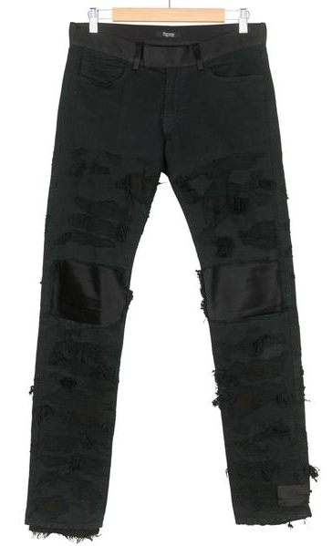
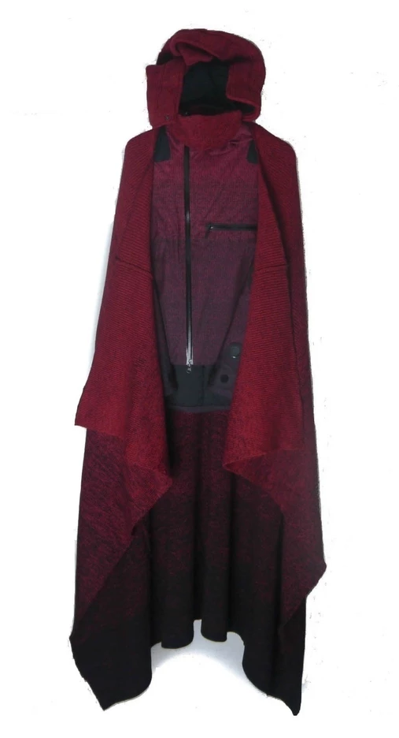
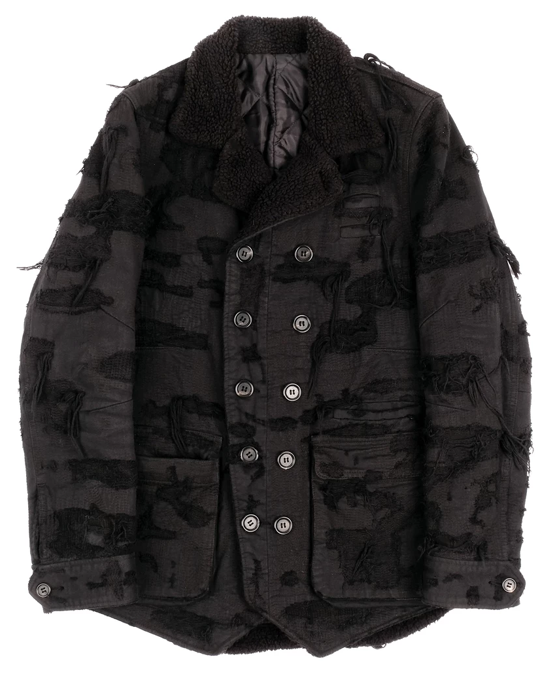

Space Odyssey
AW09 Earmuff Maniac Look Book, March 2009
With this collection, Takahashi’s slow transition into more wearable and accessible garments can be seen. As a trade-off for more conventional construction techniques, the silhouettes of Earmuff Maniac seem to complement the wearer more than ever before. Color pallets are very muted and consist of greys and browns, with the occasional stand out yellow or sky blue. The look book for this season gives off an earie vibe, like the models are in an outer space murder-crime horror film.
AW09 78 Jeans from Silver League.
An iconic pant from Undercover, the 78 Jeans closely resemble the more famous 85 Jeans from AW05. Except with this iteration, these are much more refined and muted. The traditional Undercover patchwork and reinforcement stitching is complemented by satin detailing at the waist, knee, and back pocket.
AW09 Hooded Cloak from sefirah on Grailed.
This item highlights the overall tone that Earmuff Maniac possessed. Nearly draping all the way down to the ground, this cloak accentuates the mystic feel and undertone of this season. During the catwalk show, the model appeared as if they were floating across the stage as if they were an astronaut on a spacewalk.
AW09 78 Jacket from Little Sister NY.
The 78 construction pattern is show here again with this blazer. Hand distressed fabric goes unnoticed at first glance, appearing as if it is a black camouflage print. Takahashi’s attention to detail and appreciation for craftsmanship is showcased perfectly here.
Back to Top